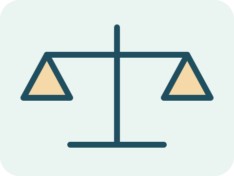
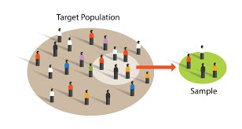

Research Methods and AnalysisHigh priority
Research is an all-round scoring chapter: define the concept, give types, then advantages and limitations with an Indian example.
Chapter map#
- Research methods
Theory strands
- Structural
- Social action
- Giddens
Perspectives
- Dramaturgy
- Phenomenology
- Ethnomethodology
Post-positivism
- Popper
- Kuhn
Building blocks
- Hypothesis
- Variables
- Sampling
Data collection
- Questionnaire
- Interview
- Observation
- FGD
- Survey
Methodology
- Quantitative
- Qualitative
- Feminist
- Mixed
Quality and ethics
- Reliability
- Validity
- Consent
- Harm
Exam lens#
The story first#
In simple words#
- Structural theories (Durkheim, Marx) are positivist and macro; social action theories (Weber, Goffman, Garfinkel) are non-positivist and micro.
- Popper: theories are only falsified; Kuhn: science changes by paradigm shifts.
- A hypothesis links variables; sampling is probability (random, systematic, stratified) or non-probability (convenience, volunteer, snowball).
- Quality means reliability (consistent) and validity (measures what it claims); ethics protects participants.
| Term | In plain words |
|---|---|
| Dramaturgy | Goffman's theatre analogy for social life: front stage, back stage, impression management. |
| Typification | Schutz: shared categories such as teacher or doctor used to interpret the world. |
| Indexicality | Garfinkel: meaning depends on context. |
| Reflexivity | Garfinkel: people create and sustain social order through interaction. |
| Falsification | Popper: a theory can be refuted by a single counter-instance. |
| Paradigm | Kuhn: shared framework of assumptions, concepts and methods. |
| Triangulation | Mixed-method strength: combining methods to cross-check findings. |
| Situated knowledge | Feminist idea that all knowledge is shaped by the knower's position. |
| Reliability | Consistency of a research tool under similar conditions. |
| Validity | Whether the tool measures what it claims to measure. |
1 · Major Theoretical Strands of Research Methodology#
- Research methodology in sociology has been shaped by two broad and contrasting theoretical traditions - structural theories and social action theories.
- These differ in their assumptions about the nature of society, the role of the individual, and the appropriate methods for sociological inquiry.
2 · Structural Theories#
- Structural theories view society as having a definite, objective structure that exists independently of individual actions.
- They argue that the actions, thoughts, and opportunities of individuals are shaped and constrained by the overarching social structure.
- This perspective takes a macro-level view, focusing more on the system as a whole rather than on individual experiences.
- Functionalism, as developed by Emile Durkheim, is a prime example of a structural theory.
- Karl Marx’s conflict theory is another structuralist approach, which sees class position and economic structure as determining social life.
- Other influential structuralist thinkers include Louis Althusser (structural Marxism) and Claude Levi - Strauss (structural anthropology).
- The methodology of structural theories is typically positivist.
- They aim to discover objective laws governing social life, relying on systematic observation, measurement, and analysis.
- Structuralists assume that objective social facts exist and can be studied independently of the observer’s values.
3 · Social Action Theories#

- In contrast, social action theories reject the notion that society is a fixed, rigid structure that determines all human behaviour.
- Instead, they argue that society is continuously created and re-created through the meaningful interactions of individuals.
- Here,social action is not simply determined by external structures; rather, it is shaped by the subjective meanings that individuals attach to their actions.
- This perspective takes a micro-level view, emphasising the agency of individuals and the interpretive processes through which social reality is constructed .
- Max Weber’s interpretive sociology is the starting point of social action theories.
- Other notable approaches in this tradition include Symbolic Interactionism (George Herbert Mead, Herbert Blumer), Cooley’s looking-glass self, Erving Goffman’s dramaturgical analysis, Ethnomethodology (Harold Garfinkel), and Phenomenology (Alfred Schutz).
- Social action theories are non-positivist in methodology, arguing that the social world cannot be understood using the same methods as the natural sciences.
- They hold that reality is socially constructed by the actors themselves.
- While the choice of research topic may be influenced by the researcher’s values, these theorists often maintain that striving for objectivity is still important during data collection and analysis.
| Aspect | Structural Theories | Social Action Theories |
|---|---|---|
| View of Society | Society has a fixed, objective structure independent of individuals | Society is fluid and created through ongoing human interaction |
| Level of Analysis | Macro-level | Micro-level |
| Determinants of Action | Shaped and constrained by social structure | Determined by subjective meanings individuals attach to actions |
| Assumption | Objective social facts exist independently of human perception | Reality is socially constructed by actors |
| Methodology | Scientific / positivist | Interpretive / non-positivist |
| Key Thinkers | Durkheim, Marx, Althusser, Levi-Strauss | Weber, Mead, Blumer, Cooley, Goffman, Garfinkel, Schutz |
- Research methodology in sociology has thus been shaped by these broad theoretical orientations.
- Structural theories emphasize macro-level structures and objective social facts, while social action theories prioritize micro-level meanings and subjective realities.
- Giddens’ structuration theory represents a synthesis, acknowledging both the constraining and enabling role of structure and the creative capacity of human agency.
4 · Dramaturgy#

- Erving Goffman, in his seminal work The Presentation of Self in Everyday Life, introduced the dramaturgical approach to analyze social life.
- This perspective, rooted in symbolic interactionism, compares everyday social interaction to a theatrical performance.
- In Goffman’s view, much like actors on a stage, individuals are constantly engaged in role performance.
- To enact these roles effectively, they adopt appropriate costumes (clothing, mannerisms, language) and props (objects, settings, or symbolic tools) that support the image they seek to convey.
- Just as actors prepare extensively before stepping on stage, members of society invest time and effort in mastering the expectations, norms, and behaviours associated with their social roles.
- In this metaphor, the front stage represents the social arena where individuals are aware they are being observed and evaluated by an audience -their peers, colleagues, or strangers.
- Here, behaviour is carefully crafted, tailored to social expectations, and adapted in response to audience feedback.
- Just as actors adjust their delivery depending on the crowd’s reaction, people in everyday life often modify their role performance when they sense approval, disapproval, or indifference from others.
- Dramaturgical approach uses the analogy of theatre to explain social life Central to Goffman’s framework is the concept of impression management -the deliberate and strategic process through which individuals attempt to influence the perceptions of others.
- This involves emphasising certain desirable traits, suppressing potentially damaging information, and creating a consistent and coherent public image.
- In doing so, individuals strive to avoid embarrassment, maintain dignity, and preserve their face -a term Goffman uses to describe one’s socially validated self-image.
- Contrasting with the front stage, the back stage is where individuals can “drop the performance.” Here, away from the gaze of the audience, people feel free to relax, discard their masks, and express aspects of themselves that may be hidden in public.
- The back stage may be a private physical space, like one’s home, or a psychological state experienced in the company of trusted friends and family.
- It serves as a crucial area for rest, preparation, and recovery before re-entering the front stage.
- By employing the dramaturgical metaphor, Goffman illuminated how social life is structured by performance, audience interaction, and context.
- His analysis reveals that identity is not a fixed entity but an ongoing, dynamic process shaped by situational demands.
- The dramaturgical approach remains influential for understanding everyday social interactions, particularly in contexts where public image, authenticity, and social perception are at stake.
5 · Phenomenology and Ethnomethodology#
- Phenomenology is a European philosophical tradition developed by Edmund Husserl and later adapted into sociology by Alfred Schutz.
- At its core, phenomenology argues that individuals experience the world through their senses, which are constantly bombarded by multiple phenomena.
- To make sense of these phenomena, people classify them into categories-an act that enables them to construct their social reality.
- Importantly, phenomenology challenges the notion that social reality is fixed or objective.
- Social reality, according to this perspective, is not an inherent truth but rather a construction of the human mind.
- Schutz explained that people develop typifications -shared conceptual categories such as teacher, doctor, bus, or dog-which help them interpret and navigate the world.
- These typifications are not unique to each individual but are collectively shared within a society, learned from childhood primarily through language.
- This shared understanding allows people to communicate effectively and coordinate everyday activities.
- However, phenomenology emphasizes that this shared reality is a socially constructed illusion rather than an independent, objective truth.
- In other words, while people act as though reality is “real,” it is actually a mutually agreed-upon framework shaped by classification and interpretation.
- Ethnomethodology is a sociological approach developed in the 1960s by Harold Garfinkel, directly influenced by phenomenology.
- While phenomenology focuses on the philosophical idea that reality is constructed, ethnomethodology applies this insight to sociological research, studying the methods people use to produce and sustain their sense of social order.
- Like Schutz, Garfinkel argued that there is no objective social reality; instead, reality is a convenient fiction continuously created by members of society.
- People rely on common sense knowledge,everyday experiences, and practical reasoning to interpret events and maintain the appearance of social order.
- The role of the sociologist, therefore, is to uncover the practices people use to create and sustain this reality in ordinary life.
- Two important concepts in ethnomethodology are:
- 1. Indexicality – The idea that meaning depends on context.
- Words, actions, or events cannot be understood in isolation; their significance emerges only within a particular social situation.
- 2. Reflexivity – The process by which people actively create and sustain social order through conversation and interaction.
- Although objective order may not inherently exist, individuals behave as though it does by seeking and producing meaning in their exchanges.
- An influential ethnomethodological study is Atkinson’s work on suicide.
- Atkinson argued that suicide is not an objective category but a socially constructed reality.
- Whether a death is classified as suicide depends on negotiations among different social actors-such as the police, judiciary, medical practitioners, family members, and neighbors-who rely on common-sense explanations and shared assumptions.
- This illustrates how even seemingly “factual” events are the product of collective interpretation rather than neutral observation.
- In summary, phenomenology and ethnomethodology both reject the idea of an objective, fixed social reality.
- Phenomenology provides the theoretical foundation, emphasizing that reality is created through shared typifications and interpretations.
- Ethnomethodology takes a more practical approach by studying the everyday methods people use to create, negotiate, and maintain the illusion of order in their social world.
- Together, they offer a powerful critique of positivist assumptions in sociology, shifting the focus from discovering “truth” to understanding how truth is socially produced.
6 · Post-Positivism#
- Post-positivism refers to a broad methodological shift that emerged as a critique of classical positivism, especially its belief in objective, value-free, and certainty-based scientific knowledge.
- While positivism assumed that social reality could be studied in the same way as natural phenomena through observation, induction, and law-like generalizations, post-positivists argue that knowledge is provisional, theory-laden, fallible, and historically conditioned.
- Post-positivism questions how scientific knowledge is produced, validated, and sustained, thereby opening space for reflexivity, criticism, and methodological pluralism in sociology.
- Karl Popper is one of the most influential critics of positivist methodology.
- In works such as The Logic of Scientific Discovery(1934), Popper strongly criticizes inductive empiricism, which assumes that repeated observations can lead to universal laws.
- Popper argues that no finite number of observations can logically justify a universal generalization.
- Even if a theory has been repeatedly supported by empirical evidence, there always remains the possibility that it may be disproved in the future.
- According to Popper, scientific theories can never be conclusively verified; they can only be falsified.
- A single counter-instance is sufficient to refute a universal claim.
- His famous example illustrates this clearly: no matter how many white swans we observe, we cannot logically conclude that all swans are white.
- But the observation of a single black swan is enough to falsify the claim.
- Hence, scientific knowledge is conjectural and provisional, not absolute or final.
- Thomas Kuhn deepens the post-positivist critique inThe Structure of Scientific Revolutions (1962).
- Kuhn challenges the positivist assumption that scientific knowledge progresses in a linear and cumulative manner.
- Instead, he argues that science operates within paradigms - shared frameworks of assumptions, concepts, and methods accepted by the scientific community at a given historical moment.
- According to Kuhn, what is regarded as “scientific truth” is not purely objective, but is shaped by an agreement within the scientific community.
- During normal times, researchers work within an accepted paradigm and tend to ignore or explain away anomalies.
- Over time, however, unresolved anomalies accumulate, leading to a crisis, and eventually to a scientific revolution, in which the old paradigm is replaced by a new one.
- With this paradigm shift, the very standards of truth, explanation, and relevance also change.
- Kuhn also points out that scientists often have professional and institutional interests in defending existing paradigms, since careers, reputations, and research funding are tied to them.
- Consequently, paradigm change is not purely rational but also social and historical.
- From this perspective, scientific knowledge is contextual and temporally bounded, and there is no guarantee that the currently dominant paradigm will remain valid in the future.
- Sociology at present is in a pre-paradigmatic stage, characterized by the coexistence of multiple competing theoretical frameworks rather than a single dominant paradigm.
- Post-positivism fundamentally transforms how sociologists understand knowledge, science, and methodology.
- By exposing the limits of induction (Popper) and the social embeddedness of scientific knowledge (Kuhn), post-positivism challenges positivist claims of objectivity, certainty, and cumulative progress.
- It encourages sociology to be self-critical and pluralistic, recognizing that scientific theories and knowledge are historically situated, revisable, and influenced by social contexts.
7 · Sociological Research#
- Sociological research is the systematic study of society, social relationships, and social behavior, aimed at generating reliable knowledge about the social world.
- It uses well-defined methods to collect, analyze, and interpret data in order to answer specific questions about how societies function, why people behave in certain ways, and how social structures influence individuals.
- Unlike casual observation or personal opinion, sociological research relies on empirical evidence , critical analysis , and methodological rigor to ensure that findings are accurate, valid, and applicable beyond the immediate study.
- Hypothesis A hypothesis is a clear, specific statement that proposes a relationship between two or more variables under investigation.
- It acts as a tentative assumption or explanation that has not yet been tested, but can be proven or disproven through systematic empirical research.
- A hypothesis may be based on personal observations , existing evidence , common sense , intuition , or even imagination .
- The hypothesis plays a crucial role in scientific research by:
- 1. Guiding the study: It directs the researcher’s focus toward relevant variables and the relationships between them.
- 2. Linking theory and data: It connects abstract sociological theory with concrete, observable facts.
- 3. Preventing aimless inquiry: Without a hypothesis, research risks becoming “blind” and reduced to indiscriminate data collection.
- 4. Serving as a starting point: It forms the foundation upon which the research design, methods, and analysis are built.
- A good hypothesis has the following characteristics:
- 1. Few variables: Focused and not overloaded with too many elements.
- 2. Relevance: Directly connected to the research problem.
- 3. Simplicity: Clearly stated and easy to understand.
- 4. Testability: Capable of being verified or refuted through empirical evidence.
- In essence, a hypothesis transforms a research topic from a broad and vague question into a testable proposition, making sociological inquiry more structured, efficient, and meaningful.
8 · Variables#


- In experimental and comparative research in sociology, variables play a crucial role in identifying cause-and-effect relationships.
- Avariableis any characteristic, condition, or factor that can take more than one value and can be measured or categorized for analysis.
- Different types of variables are:
- 1. Independent and Dependent variables: Independent variables are those factors that are presumed to influence or cause change in another variable.
- In social research, education often functions as an independent variable influencing outcomes such as occupational mobility or political awareness.
- Dependent variables are the outcomes whose variation is explained by the independent variable.
- For instance, voting behaviour may be treated as a dependent variable affected by education.
- 2. Qualitative and Quantitative variables: Qualitative variables such as caste, religion or ethnicity are categorical in nature, whereas quantitative variables such as income, age and number of children are numerically measurable.
- 3. Continuous and Discrete variables: Continuous variables can take an infinite range of values, such as income or height, while discrete variables have fixed, countable values, such as number of children.
- Variables allow sociologists to convert abstract social phenomena into empirically analysable components, making systematic explanation and comparison possible.
9 · Sampling#


- Sampling is the process of selecting a subset of elements from a larger population, so that the findings from the study of the sample can be generalized to the population.
- This helps researchers save time, effort, and resources while still producing valid conclusions.
- Broadly, sampling techniques can be of two types: probability sampling and non-probability sampling.
- Probability Sampling refers to those sampling techniques in which every element in the sampling frame(list of all elements in the population) has an equal chance of being selected.
- Techniques: 1. Simple Random Sampling: Assign numbers to all elements in the sampling frame, then select randomly.
- Simple random sampling is simple to understand and operationalize, ensures equal chance to all units, and minimizes selection bias.
- However, it can be time-consuming and costly for large populations, and may ignore subgroup representation.
- 2. Systematic Random Sampling: Select everynthelement from the sampling frame.
- It is also easy to implement, saves time, and ensures even coverage of population.
- However, it is susceptible to periodicity bias; i.e. if there's some hidden order or trend in the population, systematic sampling might lead to bias.
- 3. Stratified Random Sampling: Divide the population into strata based on certain criteria, then select proportionately from each stratum.
- This ensures representation of all subgroups, increases precision, and enables meaningful subgroup comparison.
- But it requires prior knowledge of strata, has a more complex design, and is more expensive and time-intensive.
- Non-Probability Sampling are those sampling techniques in which all elements in the population do not have an equal chance of being selected.
- Techniques: 1. Convenience Sampling: Select elements based on researcher’s ease of access.
- Convenience sampling is fast, inexpensive, and useful for pilot or exploratory studies.
- However, it can be highly one-sided, with poor representativeness, and findings cannot be generalized.
- 2. Volunteer Sampling: Include only those who willingly volunteer to participate.
- Volunteer sampling ensures easy recruitment, is suitable for sensitive topics, and the participants often highly motivated.
- It, however, reflects self-selection bias, and leads to over-representation of certain traits.
- 3. Snowball Sampling: Begin with a few accessible participants, then expand the sample through referrals.
- It is effective for hidden or hard-to-reach populations, builds trust, and is useful in qualitative research.
- It, however, may be affected by network bias, lack of representativeness, and heavy dependence on initial respondents.
- The choice of sampling technique depends on research objectives, population characteristics and available resources, and no single method is universally superior.
10 · Data Collection Techniques in Sociological Research#


- In sociological research, data collection refers to the systematic process of gathering information to answer research questions, test hypotheses, and develop or refine theories.
- 1. Questionnaire A questionnaire is a written list of questions provided to respondents, either in physical form (by post) or online.
- It may include close-ended questions (with fixed choices) or open-ended questions (allowing free responses).
- Advantages:
- 1. Cost-effective and quick method of data collection.
- 2. Large coverage with minimal manpower.
- 3. Respondent anonymity promotes honest answers.
- 4. Flexibility in administration. Limitations:
- 1. Low response rates, especially in postal/online surveys.
- 2. Non-serious or incomplete responses.
- 3. No scope for clarification or probing.
- 4. Limited to literate and motivated respondents.
- Data and Information While often used interchangeably, data and information are not the same.
- Data refers to the raw, unorganized facts that by themselves may lack meaning.
- Information, on the other hand, is the result of processing, organizing, and interpreting data to place it in context and make it meaningful.
- In research, data is the starting point - collected through surveys, interviews, observations, or other methods - while information emerges after analysis and interpretation.
- For instance, that “XYZ Industries has 4,000 employees” is a piece of data.
- However, once this is analysed to reveal patterns such as employee turnover rates, demographic composition, or productivity levels, it becomes useful information for decision-making.
- While data can exist without information, information is always dependent on data.
- Though dependent on data, information is more useful and actionable.
- Together, they form the foundation for sociological inquiry, with data being the raw material and information being the structured, meaningful outcome.
- 2. Interview An interview involves direct interaction between researcher and respondent, either face-to-face, over the telephone, or through video conferencing.
- Interviews can be structured (fixed set of questions) or unstructured (open, conversational).
- Advantages:
- ● Allows probing and clarification.
- ● Captures detailed, nuanced responses.
- ● Builds rapport, which can lead to richer data.
- Limitations:
- ● Costly and time-consuming.
- ● Requires trained interviewers.
- ● Possible social desirability bias (respondents giving “acceptable” answers).
- ● Interviewer bias may influence responses.
- 3. Observation Observation is the direct recording of social phenomena as they occur.
- It can be participant (in which researcher takes part in the activities and life of the group under observation) or non-participant (researcher remains a detached observer).
- Advantages:
- ● Provides rich contextual detail.
- ● Allows study of customs, rituals, and social norms in their natural setting.
- ● Useful for studying non-verbal behaviour.
- Limitations:
- ● Time-intensive
- ● Limited scope and generalisability.
- ● The researched people may change behaviour when being observed.
| Feature | Participant Observation | Non-Participant Observation |
|---|---|---|
| Involvement | Researcher takes part | Researcher stays outside |
| Insight Depth | High | Moderate |
| Objectivity | May be compromised | Higher |
| Example | Anthropologist living in a tribal village | CCTV monitoring in a public space |
- Ethnography is an in-depth, long-term study of a community or group, combining several data collection methods including observation, interviews, and document analysis.
- It seeks to understand people’s lived realities and cultural meanings.
- Advantages:
- ● Provides holistic, deep cultural understanding.
- ● Captures the “insider’s perspective”.
- ● Rich qualitative data. Limitations:
- ● It is time consuming.
- ● Fieldwork can be difficult and demanding.
- ● Access and rapport-building can be difficult.
- ● Limited to small, specific groups; low generalisability.
- ● Ethical concerns, especially with sensitive communities.
- 4. Focus Group Discussion (FGD) A focus group involves 6-12 participants discussing a topic under the guidance of a skilled moderator.
- It helps explore opinions, attitudes, and group dynamics.
- Focus group method was systematically developed by R.K. Merton and Patricia Kendall.
- Advantages:
- ● Captures diverse viewpoints in a social context.
- ● Quick way to gather qualitative data.
- ● Allows observation of group interactions.
- Limitations:
- ● Difficult to recruit and coordinate participants.
- ● Dominant individuals may overshadow others.
- ● Social desirability bias may be strong.
- ● Requires skilled moderation. 5. Biography / Life History This method involves collecting detailed accounts of an individual’s life, often through interviews, documents, and secondary sources.
- Robert Bogdan used the life history of Jane Fry in *Being Different: The Autobiography of Jane Fry* to understand stigma, identity, and the lived experiences of a socially marginalized individual through the biographical method.
- Thomas and Znaniecki inThe Polish Peasant in Europe and America used personal letters, autobiographies, and life histories of Polish migrants to study migration, disorganization, and social change.
- Considered a classic use of life-history method.
- Advantages:
- ● Brings out the personal dimension of social life.
- ● Useful for understanding historical and cultural contexts.
- ● Can give voice to marginalised individuals.
- Limitations:
- ● Subjectivity in narration and interpretation.
- ● Time-intensive.
- ● Privacy and consent issues. 6. Survey systematically collects standardised data from a large number of respondents, often through questionnaires or structured interviews.
- Advantages:
- ● Large-scale coverage.
- ● Allows statistical analysis and generalisation.
- ● Useful for policy-making and social planning.
- Limitations:
- ● Limited depth in responses.
- ● Potential non-response bias. Census is a complete enumeration of the entire population, collecting demographic, social, and economic data.
- Advantages:
- ● Comprehensive and authoritative data.
- ● Essential for planning, resource allocation, and political delimitation.
- Limitations:
- ● Long gaps between data collection (e.g., 10 years in India).
- ● Difficult to reach marginal or nomadic populations.
- 7. Visual Studies in sociological research refers to the use and analysis of images, visuals, and visual practices - such as photographs, films, advertisements, and social media images - to understand social life.
- It is based on the idea that societies do not communicate only through words, but also through images that carry meanings, values, ideologies, and power relations.
- Visuals are produced in specific social contexts, circulated through institutions, and interpreted differently by various social groups.
- Visual culture helps sociologists examine how social identities (gender, class, caste, race), norms, stereotypes, consumption patterns, and political messages are constructed and reproduced.
- Visual culture is particularly useful for studying power and inequality, as images often naturalize dominance and marginalization - for example, media portrayals of women, minorities, or the poor.Media studies, cultural studies and feminist research have shown how visuals operate as systems of signs that both reflect and shape social reality.
11 · Methodology in Sociological Research#
- In research, methodology refers to the body of rules, assumptions, and procedures that guide how research is conducted.
- It provides the framework that determines what methods are used, how data is collected, and how findings are interpreted.
- A well-designed methodology ensures that the research is credible, replicable, and capable of accurately representing social reality.
- The choice of methodology influences every step of the research process - what counts as evidence, how it is collected, and how conclusions are drawn.
- Quantitative Research Methodology Quantitative methodology follows the positivist tradition.
- It focuses on obtaining measurable, numerical data to study patterns, correlations, and causal relationships between variables.
- This approach aims to present an objective and structured picture of social reality.
- Key features:
- ● Relies on statistical data and numerical analysis.
- ● Often used for large-scale societies or populations.
- ● Data can be represented through graphs, charts, and tables.
- ● Emphasizes objectivity and replicability.
- Typical Methods in Quantitative Research 1.
- Experimentation - Studies the effect of one variable on another in a controlled environment.Laboratory experimentsare somewhat rare in sociology due to difficulty in replicating social reality in a lab.Field experimentstake place in natural settings.
- Example: Elton Mayo’s Hawthorne studies.
- Or, the studies by Pierson on how appearance influences behavior.
- 2. Comparative Method - Compares two or more societies, groups, or social phenomena.
- ● Example: Durkheim’s Suicide Study compared suicide rates among Protestants and Catholics, and among married vs. unmarried individuals.
- ● Can use historical records, official statistics, or existing data to identify patterns.
- Qualitative Research Methodology Qualitative methodology challenges the assumption that scientific methods are always appropriate for studying social life.
- Instead, it seeks to understand themeanings, motives, and subjective experiencesof social actors.
- Key features:
- ● Produces non-numerical data (usually words).
- ● Often used for smaller groups (e.g., tribes, communities).
- ● Focuses on depth over breadth.
- ● Methods often include unstructured interviews, participant observation, focus groups, content analysis, and projection techniques.
12 · Feminist Research Methodology#

- Feminist research methodology emerged as a response to the gender bias deeply embedded in mainstream sociological research.
- Feminist scholars argue that traditional sociology has been constructed largely by men, about men, and for men.
- This bias is not accidental; it is rooted in the history of the discipline, where the dominant voices, frameworks, and priorities have been shaped by male experiences and perspectives.
- For instance, feminist critics of mainstream sociological research point out that much of the research has relied heavily on all-male samples, yet its findings are generalized to the whole population, implicitly assuming that men’s experiences represent universal human experience.
- This erases the specific realities of women’s lives and renders them invisible in academic knowledge.
- Also,masculine language is often used in sociological writing -employing “he,” “man,” or “mankind” as default terms, reinforcing the assumption that men are the main subjects of study.
- Feminist researchers also highlight that women’s issues are neglected frequently in research agendas.
- Topics such as domestic labor, caregiving, reproductive rights, sexual harassment, and gender-based violence have historically been marginal to mainstream sociology.
- Even when women’s contributions in social, political, and economic life are acknowledged, their importance is often downplayed, reinforcing patriarchal notions of secondary importance.
- British sociologist Ann Oakley offered a powerful critique of the positivist tradition in social research.
- She argued that the positivist insistence on detachment, emotional neutrality, and objectivity in the research process reflects a distinctly masculine ideal of knowledge production.
- In positivist research, subjects are treated as “objects” to be studied, rather than as human beings with emotions and agency.
- This clinical and impersonal approach, Oakley maintained, silences the voices of participants and prevents the research from capturing the full depth of their lived experiences.
- Oakley advocated for a more collaborative and participatory research style, one that breaks down the artificial barriers between researcher and researched.
- In her view, the research relationship should be mutual - Researchers should engage with participants as equals, valuing their perspectives and experiences rather than imposing an external theoretical framework.
- Moreover, empathy should be embraced, and not avoided.
- Emotional connection can enhance the quality of data and lead to richer, more authentic insights.
- This approach directly challenges the positivist notion of objectivity, replacing it with “situated knowledge”- the understanding that all knowledge is shaped by the position and context of both the researcher and the participants.
- In essence, feminist research methodology is not only about studying women but also about transforming the very process of knowledge creation to make it more inclusive, equitable, and representative of diverse social realities.
- By exposing the male bias of traditional sociology and developing alternative approaches rooted in collaboration, empathy, and reflexivity, feminist scholars like Oakley have expanded the methodological horizons of the discipline.
- Mixed methods: Contemporary social realities often require more than a single methodological lens.
- Mixed method research refers to the systematic integration of quantitative and qualitative methods within a single study to achieve comprehensive understanding.
- Mixed methods strengthen research through triangulation, combine numerical trends with lived experiences, enhance policy relevance and offer methodological flexibility.
- They are particularly useful in development studies, gender research and public policy evaluation.
- However, mixed methods are time-consuming, require high methodological competence, risk superficial integration and increase research complexity.
- When coherently designed, mixed method research provides a balanced and robust approach to understanding complex social phenomena.
13 · Reliability and Validity#
- For any sociological research to be meaningful, it must demonstrate both reliability and validity.
- Reliability refers to the consistency of a research tool or method - if the same method is used repeatedly under similar conditions, it should produce the same results.
- Validity, on the other hand, concerns whether the research tool actually measures what it claims to measure, accurately reflecting the social reality under study.
- Reliability and validity are a cornerstone of scientific sociological research.
- Validity is a non-negotiable in sociological research, because it ensures that a study actually measures what it claims to measure, rather than producing technically correct but conceptually misleading results.
- Since sociology deals with abstract and value-laden concepts such as class, power, identity, alienation or religiosity, high validity is essential to prevent distortion of social reality.
- Valid research enhances the credibility and usefulness of findings, allows meaningful comparison across studies, and strengthens the policy relevance of sociological knowledge.
- Without validity, even highly reliable data risk becoming sociologically insignificant, as they may reflect measurement of phenomenon other than those of concern to the researcher.
- Reliability ensures that measurements must be consistent and dependable.
- This is important for sociology to claim scientific status, its.
- Reliability refers to the degree to which a research instrument produces consistent results when repeated under similar conditions.
- Reliability is important because it enhances the credibility of sociological findings, allows replication of studies, ensures measurement accuracy for abstract concepts such as values or beliefs, and strengthens the policy relevance of research outcomes.
- However, high reliability does not automatically guarantee validity, and the fluid nature of social contexts can complicate perfect reliability.
14 · Ethical Concerns in Sociological Research#

- Ethics in sociological research refers to the moral principles and standards that guide researchers in conducting studies involving human participants.
- Since sociology often deals with sensitive aspects of social life - such as caste, class, gender, religion, deviance, family, power, and inequality - ethical considerations become central to protecting the dignity, rights, and well-being of research participants.
- Ethical research ensures not only the safety of respondents but also the credibility and legitimacy of sociological knowledge.
- 1. Informed consent: Participants must be clearly and adequately informed about the nature, purpose, methods, and possible consequences of the research before they agree to participate.
- Consent should be voluntary, free from coercion, and based on clear understanding.
- In cases involving vulnerable groups such as children, prisoners, migrants, or marginalized communities, obtaining informed consent becomes even more critical.
- 2. Voluntary participation: Closely related to informed consent is the principle of voluntary participation, which means that respondents should have the freedom to refuse participation or withdraw from the study at any stage without fear of penalty or disadvantage.
- Any form of pressure, manipulation, or inducement undermines ethical research practice.
- 3. Privacy and Confidentiality: Researchers must respect the private lives of participants and avoid unnecessary intrusion into personal or sensitive aspects of social life.
- Researchers must also ensure that personal information is not disclosed without permission.
- Identities of respondents should be protected through anonymization and secure handling of data, especially when the research deals with stigmatized behaviors or sensitive issues.
- 4. Harm Avoidance (non-maleficence): Research should not cause physical, psychological, emotional, or social harm to participants, especially when dealing with vulnerable groups.
- This includes avoiding re-traumatization, emotional distress, or social stigma that may arise from participation in research.
- Researchers must carefully weigh the potential risks against the anticipated benefits of the study.
- 5. Deception and covert research: The use of concealment or deception raises ethical issues as it violates informed consent.
- While some sociologists argue that covert methods may be necessary to study hidden or deviant groups, critics contend that deception violates trust and informed consent.
- Hence, the use of deception remains highly contested and must be justified with strong methodological and ethical reasoning.
- 6. Honesty and integrity in research: Researchers are expected to maintain honesty and integrity in data collection, analysis, and reporting.
- Researchers must avoid fabrication, falsification, plagiarism, and selective reporting of data.
- 7. Objectivity: Personal biases, political inclinations, and ideological commitments should not distort data collection, analysis, or interpretation.
- 8. Social responsibility: Sociologists must be mindful of how their research findings may be used, misused, or politicized.
- Research should ideally contribute to social understanding, justice, and public good rather than reinforce stereotypes, prejudice, or domination.
- Several researchers have been criticized by peers, media, authorities, and the public for crossing ethical boundaries during their research:
- ● William Foote Whyte 's work Street Corner Society (1943) blurred the boundaries between friendship and research; and raised issues of informed consent and researcher loyalty.
- ● For his book Yanomamo: The Fierce People (1968),Napoleon Chagnon has faced accusations of exploiting and misrepresenting indigenous communities.
- ● Stanley Milgram's study titledObedience to Authority(1963) is accused of deception of participants, psychological stress, and lack of informed consent regarding true nature of the experiment.
- ● The deep immersion of Alice Goffman in her studyOn the Run(2014) raised questions about the credibility of information, confidentiality, and possible involvement in illegal acts.
- ● Laud Humphreys’ studyTearoom Trade(1970) is criticized for not obtaining informed consent, invasion of privacy, and breach of confidentiality.
- Ethical considerations are not merely procedural formalities but are integral to sociological inquiry.
- They reflect sociology’s commitment to human values, social responsibility, and scientific integrity.
- As sociological research increasingly engages with complex, sensitive, and vulnerable social realities, ethical conduct becomes indispensable at every stage of the research process.
Traps#
| Trap | What goes wrong, and the rule |
|---|---|
| Reliability is not validity | High reliability does not automatically guarantee validity. Exam-hall rule: consistent is not the same as correct. |
| Probability vs non-probability sampling | Probability gives every element in the frame an equal chance; non-probability does not. Exam-hall rule: equal chance = probability. |
| Structural vs social action | Structural = macro, positivist, objective facts; social action = micro, non-positivist, subjective meanings. Exam-hall rule: Durkheim and Marx left; Weber and Goffman right. |
| Popper vs Kuhn | Popper: falsification of theories; Kuhn: paradigm shifts in the scientific community. Exam-hall rule: Popper = falsify; Kuhn = paradigm. |
| Data vs information | Data is raw and unorganised; information is processed and meaningful. Exam-hall rule: information depends on data, not the reverse. |
Recall sheet#
Read once, hide it, then rebuild the chapter from memory.
- Two theoretical strands? Structural theories and social action theories
- Giddens' contribution? Structuration: a synthesis of structure and agency
- Goffman's book? The Presentation of Self in Everyday Life
- Front stage vs back stage? Observed performance vs dropping the performance
- Who adapted phenomenology into sociology? Alfred Schutz (from Husserl)
- Who founded ethnomethodology? Harold Garfinkel (1960s)
- Two ethnomethodology concepts? Indexicality and reflexivity
- Atkinson's study? Suicide as a socially constructed classification
- Popper's key idea and book? Falsification; The Logic of Scientific Discovery (1934)
- Kuhn's book and idea? The Structure of Scientific Revolutions (1962); paradigms
- Where is sociology in Kuhn's terms? Pre-paradigmatic
- Probability sampling types? Simple random, systematic, stratified
- Non-probability sampling types? Convenience, volunteer, snowball
- Who developed the focus group method? R.K. Merton and Patricia Kendall
- Who used life history of Jane Fry? Robert Bogdan
- Who wrote The Polish Peasant? Thomas and Znaniecki
- Who urged empathy in research? Ann Oakley
- Reliability vs validity? Consistency vs measuring what it claims
- Cases of ethical criticism? Whyte's Street Corner Society (1943); Chagnon's Yanomamo (1968)
Abbreviation column#
| Short form | Full form | One-line meaning |
|---|---|---|
| FGD | Focus Group Discussion | Guided discussion of 6-12 participants |
| PYQ | Previous Years' Questions | Questions UPSC has already asked |
Revise#
| Day | What to do |
|---|---|
| Day 0 | Read the Exam lens and the notes; mark the chapter done |
| Day +1 | Recall sheet: read once, hide, rebuild |
| Day +3 | Flashcards: missed ones only |
| Day +7 | Quick quiz; fix each miss against the Traps |
| Day +21 | Write two Mains answers from memory using the skeletons |
| Day +45 | Blank-page test: redraw the chapter map |
Test yourself#
Quick quiz
Flashcards
Tap the card to flip.
Mains answer skeletons
One for each Mains PYQ quoted in the handout. Tap to open; try the answer first.
2025 · 20 marks · What is sampling in the context of social research? Discuss different forms of sampling with their r…
Question. What is sampling in the context of social research? Discuss different forms of sampling with their relative advantages and disadvantages.
- Intro: name Research Methods and Analysis and state the central idea in one line (see The story first).
- Body: build the answer from the notes under: Sampling.
- Close: finish with the matching criticisms section and a one-line judgement.
2025 · 10 marks · What is hypothesis? Critically evaluate the significance of hypothesis in social research.
Question. What is hypothesis? Critically evaluate the significance of hypothesis in social research.
- Intro: name Research Methods and Analysis and state the central idea in one line (see The story first).
- Body: build the answer from the notes under: Sociological Research.
- Close: finish with the matching criticisms section and a one-line judgement.
2025 · 10 marks · What do you mean by reliability? Discuss the importance of reliability in social science research.
Question. What do you mean by reliability? Discuss the importance of reliability in social science research.
- Intro: name Research Methods and Analysis and state the central idea in one line (see The story first).
- Body: build the answer from the notes under: Reliability and Validity.
- Close: finish with the matching criticisms section and a one-line judgement.
2025 · 10 marks · What is a variable in social research? What are their different types? Elaborate
Question. What is a variable in social research? What are their different types? Elaborate
- Intro: name Research Methods and Analysis and state the central idea in one line (see The story first).
- Body: build the answer from the notes under: Variables.
- Close: finish with the matching criticisms section and a one-line judgement.
2024 · 20 marks · What do you understand be ‘Mixed method’? Discuss its strengths and limitations in Social research.
Question. What do you understand be ‘Mixed method’? Discuss its strengths and limitations in Social research.
- Intro: name Research Methods and Analysis and state the central idea in one line (see The story first).
- Body: build the answer from the notes under: Methodology in Sociological Research.
- Close: finish with the matching criticisms section and a one-line judgement.
2024 · 20 marks · How do you view and assess the increasing trend of digital ethnography and use of visual culture in …
Question. How do you view and assess the increasing trend of digital ethnography and use of visual culture in sociological research?
- Intro: name Research Methods and Analysis and state the central idea in one line (see The story first).
- Body: build the answer from the notes under: Data Collection Techniques in Sociological Research.
- Close: finish with the matching criticisms section and a one-line judgement.
2023 · 10 marks · What are the ethical issues that a researcher faces in making use of participant observation as a me…
Question. What are the ethical issues that a researcher faces in making use of participant observation as a method of collecting data? Explain.
- Intro: name Research Methods and Analysis and state the central idea in one line (see The story first).
- Body: build the answer from the notes under: Ethical Concerns in Sociological Research; Data Collection Techniques in Sociological Research.
- Close: finish with the matching criticisms section and a one-line judgement.
2023 · 20 marks · What are the different dimensions of qualitative method? Do you think that qualitative methods help …
Question. What are the different dimensions of qualitative method? Do you think that qualitative methods help to gain a deeper sociological insight? Give reasons for your answer.
- Intro: name Research Methods and Analysis and state the central idea in one line (see The story first).
- Body: build the answer from the notes under: Methodology in Sociological Research.
- Close: finish with the matching criticisms section and a one-line judgement.
2023 · 10 marks · What are variables? How do they facilitate research?
Question. What are variables? How do they facilitate research?
- Intro: name Research Methods and Analysis and state the central idea in one line (see The story first).
- Body: build the answer from the notes under: Variables.
- Close: finish with the matching criticisms section and a one-line judgement.
2023 · 10 marks · How does the dramaturgical perspective enable our understanding of everyday life?
Question. How does the dramaturgical perspective enable our understanding of everyday life?
- Intro: name Research Methods and Analysis and state the central idea in one line (see The story first).
- Body: build the answer from the notes under: Dramaturgy.
- Close: finish with the matching criticisms section and a one-line judgement.
2022 · 10 marks · What is reliability? Explain the different tests available to social science researchers to establis…
Question. What is reliability? Explain the different tests available to social science researchers to establish reliability.
- Intro: name Research Methods and Analysis and state the central idea in one line (see The story first).
- Body: build the answer from the notes under: Reliability and Validity.
- Close: finish with the matching criticisms section and a one-line judgement.
2022 · 10 marks · Suggest measures to minimize the influence of the researcher in the process of collecting data throu…
Question. Suggest measures to minimize the influence of the researcher in the process of collecting data through focus group discussion.
- Intro: name Research Methods and Analysis and state the central idea in one line (see The story first).
- Body: build the answer from the notes under: Data Collection Techniques in Sociological Research.
- Close: finish with the matching criticisms section and a one-line judgement.
2022 · 20 marks · Explain the different types of non-probability sampling techniques. Bring out the conditions of thei…
Question. Explain the different types of non-probability sampling techniques. Bring out the conditions of their usage with appropriate examples.
- Intro: name Research Methods and Analysis and state the central idea in one line (see The story first).
- Body: build the answer from the notes under: Sampling.
- Close: finish with the matching criticisms section and a one-line judgement.
2022 · 10 marks · The difference between information and data in social science is subtle. Comment.
Question. The difference between information and data in social science is subtle. Comment.
- Intro: name Research Methods and Analysis and state the central idea in one line (see The story first).
- Body: build the answer from the notes under: Data Collection Techniques in Sociological Research.
- Close: finish with the matching criticisms section and a one-line judgement.
2022 · 10 marks · What is the distinctiveness of the feminist method of Social research Comment?
Question. What is the distinctiveness of the feminist method of Social research Comment?
- Intro: name Research Methods and Analysis and state the central idea in one line (see The story first).
- Body: build the answer from the notes under: Feminist Research Methodology.
- Close: finish with the matching criticisms section and a one-line judgement.
2021 · 20 marks · How far are sociologists justified in using positivist approach to understand social reality? Explai…
Question. How far are sociologists justified in using positivist approach to understand social reality? Explain with suitable illustrations.
- Intro: name Research Methods and Analysis and state the central idea in one line (see The story first).
- Body: build the answer from the notes under: Post-Positivism; Structural Theories; Social Action Theories.
- Close: finish with the matching criticisms section and a one-line judgement.
2021 · 10 marks · Discuss the challenges involved in collecting data through census method
Question. Discuss the challenges involved in collecting data through census method
- Intro: name Research Methods and Analysis and state the central idea in one line (see The story first).
- Body: build the answer from the notes under: Data Collection Techniques in Sociological Research.
- Close: finish with the matching criticisms section and a one-line judgement.
2021 · 10 marks · Do you think ethnomethodology helps us in getting reliable and valid data? Justify your answer.
Question. Do you think ethnomethodology helps us in getting reliable and valid data? Justify your answer.
- Intro: name Research Methods and Analysis and state the central idea in one line (see The story first).
- Body: build the answer from the notes under: Phenomenology and Ethnomethodology; Reliability and Validity.
- Close: finish with the matching criticisms section and a one-line judgement.
2020 · 20 marks · Phenomenological perspectives in Sociology reject many of the assumption of positivism, Comment.
Question. Phenomenological perspectives in Sociology reject many of the assumption of positivism, Comment.
- Intro: name Research Methods and Analysis and state the central idea in one line (see The story first).
- Body: build the answer from the notes under: Phenomenology and Ethnomethodology; Post-Positivism; Structural Theories; Social Action Theories.
- Close: finish with the matching criticisms section and a one-line judgement.
2020 · 10 marks · Analysethe strengths and weakness of social survey method in social research.
Question. Analysethe strengths and weakness of social survey method in social research.
- Intro: name Research Methods and Analysis and state the central idea in one line (see The story first).
- Body: build the answer from the notes under: Data Collection Techniques in Sociological Research.
- Close: finish with the matching criticisms section and a one-line judgement.
2020 · 10 marks · Discuss the importance and source of hypothesis in social research.
Question. Discuss the importance and source of hypothesis in social research.
- Intro: name Research Methods and Analysis and state the central idea in one line (see The story first).
- Body: build the answer from the notes under: Sociological Research.
- Close: finish with the matching criticisms section and a one-line judgement.
2019 · 20 marks · Bring out the significance of Ethnography in social research.
Question. Bring out the significance of Ethnography in social research.
- Intro: name Research Methods and Analysis and state the central idea in one line (see The story first).
- Body: build the answer from the notes under: Data Collection Techniques in Sociological Research.
- Close: finish with the matching criticisms section and a one-line judgement.
2019 · 10 marks · Explain the probability sampling strategies with examples.
Question. Explain the probability sampling strategies with examples.
- Intro: name Research Methods and Analysis and state the central idea in one line (see The story first).
- Body: build the answer from the notes under: Sampling.
- Close: finish with the matching criticisms section and a one-line judgement.
2018 · 10 marks · Distinguish between quantitative and qualitative techniques of data collection with suitable example…
Question. Distinguish between quantitative and qualitative techniques of data collection with suitable examples from Indian society.
- Intro: name Research Methods and Analysis and state the central idea in one line (see The story first).
- Body: build the answer from the notes under: Methodology in Sociological Research.
- Close: finish with the matching criticisms section and a one-line judgement.
2018 · 20 marks · Is non-positivism methodology scientific? Illustrate.
Question. Is non-positivism methodology scientific? Illustrate.
- Intro: name Research Methods and Analysis and state the central idea in one line (see The story first).
- Body: build the answer from the notes under: Post-Positivism; Structural Theories; Social Action Theories.
- Close: finish with the matching criticisms section and a one-line judgement.
2017 · 10 marks · How can one resolve the issue of reliability and validity in the context of sociological research on…
Question. How can one resolve the issue of reliability and validity in the context of sociological research on inequality?
- Intro: name Research Methods and Analysis and state the central idea in one line (see The story first).
- Body: build the answer from the notes under: Reliability and Validity.
- Close: finish with the matching criticisms section and a one-line judgement.
2017 · 10 marks · Examine epistemological foundations of qualitative methods of social research.
Question. Examine epistemological foundations of qualitative methods of social research.
- Intro: name Research Methods and Analysis and state the central idea in one line (see The story first).
- Body: build the answer from the notes under: Methodology in Sociological Research.
- Close: finish with the matching criticisms section and a one-line judgement.
2017 · 10 marks · Illustrate with example the significance of variables in sociological research.
Question. Illustrate with example the significance of variables in sociological research.
- Intro: name Research Methods and Analysis and state the central idea in one line (see The story first).
- Body: build the answer from the notes under: Variables.
- Close: finish with the matching criticisms section and a one-line judgement.
2017 · 10 marks · Explain ethnomethodological and phenomenological perspectives as critique of positivism.
Question. Explain ethnomethodological and phenomenological perspectives as critique of positivism.
- Intro: name Research Methods and Analysis and state the central idea in one line (see The story first).
- Body: build the answer from the notes under: Phenomenology and Ethnomethodology; Post-Positivism; Structural Theories; Social Action Theories.
- Close: finish with the matching criticisms section and a one-line judgement.
2016 · 10 marks · “Hypothesis is a statement of the relationship between two or more variables.” Elucidate by giving e…
Question. “Hypothesis is a statement of the relationship between two or more variables.” Elucidate by giving examples of poverty and illiteracy.
- Intro: name Research Methods and Analysis and state the central idea in one line (see The story first).
- Body: build the answer from the notes under: Sociological Research; Variables.
- Close: finish with the matching criticisms section and a one-line judgement.
2016 · 10 marks · Analyze the importance of qualitative method on social research.
Question. Analyze the importance of qualitative method on social research.
- Intro: name Research Methods and Analysis and state the central idea in one line (see The story first).
- Body: build the answer from the notes under: Methodology in Sociological Research.
- Close: finish with the matching criticisms section and a one-line judgement.
2015 · 20 marks · “Non – positivistic methodology is essential for understanding human behavior.” Discuss.
Question. “Non – positivistic methodology is essential for understanding human behavior.” Discuss.
- Intro: name Research Methods and Analysis and state the central idea in one line (see The story first).
- Body: build the answer from the notes under: Post-Positivism; Structural Theories; Social Action Theories.
- Close: finish with the matching criticisms section and a one-line judgement.
2015 · 20 marks · Why is random sampling said to have more reliability and validity in research?
Question. Why is random sampling said to have more reliability and validity in research?
- Intro: name Research Methods and Analysis and state the central idea in one line (see The story first).
- Body: build the answer from the notes under: Sampling; Reliability and Validity.
- Close: finish with the matching criticisms section and a one-line judgement.
2015 · 10 marks · What are variables? Discuss their role in experimental research.
Question. What are variables? Discuss their role in experimental research.
- Intro: name Research Methods and Analysis and state the central idea in one line (see The story first).
- Body: build the answer from the notes under: Variables.
- Close: finish with the matching criticisms section and a one-line judgement.
2014 · 20 marks · Which research technique would be most suitable for the study of consumer behaviour and its social c…
Question. Which research technique would be most suitable for the study of consumer behaviour and its social correlates? Explain.
- Intro: name Research Methods and Analysis and state the central idea in one line (see The story first).
- Body: use the chapter sections that match the keywords of the question.
- Close: finish with the matching criticisms section and a one-line judgement.
2014 · 10 marks · “Participant observation is the most effective tool for collecting facts.” Comment. (16/I/4b/20) 4. …
Question. “Participant observation is the most effective tool for collecting facts.” Comment. (16/I/4b/20) 4. In what ways biographies could be used to study social life? Explain.
- Intro: name Research Methods and Analysis and state the central idea in one line (see The story first).
- Body: build the answer from the notes under: Data Collection Techniques in Sociological Research.
- Close: finish with the matching criticisms section and a one-line judgement.
2013 · 20 marks · How do qualitative and quantitative methods supplement each other in sociological 7. Analyse the lim…
Question. How do qualitative and quantitative methods supplement each other in sociological 7. Analyse the limitation of quantitative methods in social research.
- Intro: name Research Methods and Analysis and state the central idea in one line (see The story first).
- Body: build the answer from the notes under: Methodology in Sociological Research.
- Close: finish with the matching criticisms section and a one-line judgement.